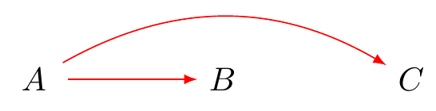
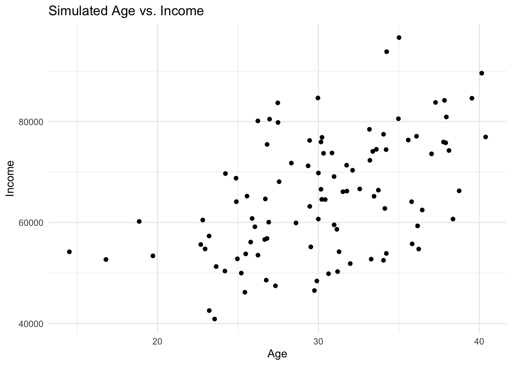

![]()

Lecture: Introduction to the Course
Slides
Open in browser here
Background Readings
Lab: Introduction to R.
Session 1: Installing R and RStudio
Introduction
This session is designed to introduce you to R and RStudio, the essential tools for statistical analysis in cross-cultural psychology. We aim to familiarise you with the software and enable you to simulate and manipulate data from the beginning.
Installing R
- Visit the Comprehensive R Archive Network (CRAN) at https://cran.r-project.org/.
- Select the version of R suitable for your operating system (Windows, Mac, or Linux).
- Download and install it by following the on-screen instructions.
Installing RStudio
- Go to the RStudio download page at https://www.rstudio.com/products/rstudio/download/.
- Choose the free version of RStudio Desktop, and download it for your operating system.
- Install RStudio by following the provided instructions.
Familiarizing Yourself with RStudio
- Console: Executes R code line by line.
- Source Editor: Allows you to write and execute scripts (series of commands).
- Environment: Displays variables and data you’ve loaded.
- Files/Plots/Packages/Help: Allows you to navigate your files, view plots, manage packages, and access R documentation.
Basic R Commands
Let us start by using R as a calculator. This will help you understand how to execute simple commands in the console.
# Addition
3 + 2[1] 5# Subtraction
5 - 2[1] 3# Multiplication
3 * 2[1] 6# Division
10 / 2[1] 5# Modulus
7 %% 2[1] 1# Exponentiation
2 ^ 3[1] 8# Integer Division
10 %/% 3[1] 3Exercise 1: Installing the tidyverse Package
In this exercise, you will install the tidyverse package, a collection of R packages designed for data science. Follow the steps below to complete the installation:
Open RStudio: Start by launching RStudio on your computer.
Access Help Tab: Locate and click on the “Help” tab in the lower right pane of RStudio.
Search for Installation Instructions: In the search bar within the “Help” tab, type in “install packages” and press Enter. Browse through the help documents if available. (Note: The specific steps to search within the Help tab might vary based on RStudio version and setup. If you cannot find the option to search for “install packages” directly in the Help tab, proceed to the next step.)
Open Package Installation:
- Alternatively, you can directly access the package installation option by going to the “Tools” menu at the top of RStudio.
- Select “Install Packages…” from the dropdown menu.
Install
tidyverse:- In the “Install Packages” dialogue box, you’ll find a field to type in the name of the package you wish to install. Type
tidyverseinto this field. - Ensure the “Install dependencies” checkbox is ticked. This option ensures that any additional packages needed by
tidyverseare also installed.
- In the “Install Packages” dialogue box, you’ll find a field to type in the name of the package you wish to install. Type
Begin Installation:
- Click on the “Install” button to start the installation process.
Wait for Completion: The installation might take a few minutes. Monitor the progress in the “Console” pane. Once the installation is complete, you will see a message in the console indicating that the process has finished.
Loading
tidyverse: After successful installation, you can load thetidyversepackage into your R session by typinglibrary(tidyverse)in the console and pressing Enter.
Simulating Data in R
Simulating data is a powerful method to understand statistical concepts and data manipulation. Let’s simulate a simple dataset representing scores from two cultural groups.
Step 1: Setting Up Your R Environment
Before simulating data, ensure R or RStudio is installed and open. RStudio provides a user-friendly interface for R, which can simplify the process of writing and executing R scripts.
Step 2: Setting a Seed for Reproducibility
To ensure that your simulated data can be reproduced exactly, it’s good practice to set a seed before generating random data. This makes your analyses and simulations replicable.
set.seed(123) # use any number to set the seedStep 3: Simulating Continuous Data
To simulate continuous data, you can use functions like rnorm() for normal distributions, runif() for uniform distributions, etc. Here’s how to simulate 100 normally distributed data points with a mean of 50 and a standard deviation of 10:
n <- 100 # number of observations
mean <- 50
sd <- 10
data_continuous <- rnorm(n, mean, sd)Step 4: Simulating Categorical Data
Categorical data can be simulated using the sample() function. For example, to simulate a binary variable (e.g., gender) with two levels for 100 observations:
levels <- c("Male", "Female")
data_categorical <- sample(levels, n, replace = TRUE)Step 5: Simulating Data Frames
Data frames are used in R to store data tables. To simulate a dataset with both continuous and categorical data, you can combine the above steps:
# create a data frame with simulated data for ID, Gender, Age, and Income
data_frame <- data.frame(
# generate a sequence of IDs from 1 to n
ID = 1:n,
# randomly assign 'Male' or 'Female' to each observation
Gender = sample(c("Male", "Female"), n, replace = TRUE),
# simulate 'Age' data: normally distributed with mean 30 and sd 5
Age = rnorm(n, mean = 30, sd = 5),
# simulate 'Income' data: normally distributed with mean 50000 and sd 10000
Income = rnorm(n, mean = 50000, sd = 10000)
)Note that you can sample probabilistically for your groups
n <- 100 # total number of observations
# sample 'Gender' with a 40/60 proportion for Male/Female
Gender = sample(c("Male", "Female"), n, replace = TRUE, prob = c(0.4, 0.6))Step 6: Add Complexity
To simulate more complex datasets, you can introduce relationships between variables. For instance, simulating age and income with a correlation:
# set the number of observations
n <- 100
# simulate the 'Age' variable
mean_age <- 30
sd_age <- 5
Age <- rnorm(n, mean = mean_age, sd = sd_age)
# define coefficients explicitly
intercept <- 20000 # Intercept for the income equation
beta_age <- 1500 # Coefficient for the effect of age on income
error_sd <- 10000 # Standard deviation of the error term
# simulate 'Income' based on 'Age' and defined coefficients
Income <- intercept + beta_age * Age + rnorm(n, mean = 0, sd = error_sd)
# create a data frame to hold the simulated data
data_complex <- data.frame(Age, Income)Step 7: Visualising Simulated Data
Visualising your simulated data can help understand its distribution and relationships. Use the ggplot2 package for this:
library(ggplot2)
ggplot(data_complex, aes(x = Age, y = Income)) +
geom_point() +
theme_minimal() +
labs(title = "Simulated Age vs. Income", x = "Age", y = "Income")
Practice
set.seed(123) # reproducibility
groupA_scores <- rnorm(100, mean = 100, sd = 15) # simulate scores for group A
groupB_scores <- rnorm(100, mean = 105, sd = 15) # simulate scores for group B
# ombine into a data frame
scores_df <- data.frame(Group = rep(c("A", "B"), each = 100), Scores = c(groupA_scores, groupB_scores))
# commands to view data
str(scores_df)'data.frame': 200 obs. of 2 variables:
$ Group : chr "A" "A" "A" "A" ...
$ Scores: num 91.6 96.5 123.4 101.1 101.9 ...# summary of columns
summary(scores_df) Group Scores
Length:200 Min. : 65.36
Class :character 1st Qu.: 92.59
Mode :character Median :101.38
Mean :102.37
3rd Qu.:111.59
Max. :153.62 # top rows
head(scores_df) Group Scores
1 A 91.59287
2 A 96.54734
3 A 123.38062
4 A 101.05763
5 A 101.93932
6 A 125.72597# bottom rows
tail(scores_df) Group Scores
195 B 85.33798
196 B 134.95820
197 B 114.01063
198 B 86.23093
199 B 95.83251
200 B 87.21780Visualising simulated data
Understanding your data visually is as important as the statistical analysis itself. Let’s create a simple plot to compare the score distributions between the two groups.
if (!require(ggplot2)) {
install.packages("ggplot2")
library(ggplot2)
} else {
library(ggplot2)
}
# plot your data
ggplot(scores_df, aes(x = Group, y = Scores, fill = Group)) +
geom_boxplot() +
theme_minimal() +
labs(title = "Score Distribution by Group", x = "Group", y = "Scores")
Histogram
library(ggplot2)
# H=histograms for both groups
ggplot(scores_df, aes(x = Scores, fill = Group)) +
geom_histogram(binwidth = 5, color = "black") +
labs(title = "Distribution of Scores",
x = "Scores",
y = "Frequency") +
facet_wrap(~Group, ncol = 1)
Excercise 1
Modify the simulation parameters to change each group’s mean and standard deviation. Observe how these changes affect the distribution.
Go to the histogram. Experiment with different bin widths. In your own words, how do large and small numbers speak differently to the data? When might you use one histogram and not another.
Simulating data for familiar statistical tests
# simulate some data
data <- rnorm(100, mean = 5, sd = 1) # 100 random normal values with mean = 5
# perform one-sample t-test
# testing if the mean of the data is reliably different from 4
t.test(data, mu = 4)
One Sample t-test
data: data
t = 11.796, df = 99, p-value < 2.2e-16
alternative hypothesis: true mean is not equal to 4
95 percent confidence interval:
4.931989 5.308942
sample estimates:
mean of x
5.120465 # simulate data for two groups
group1 <- rnorm(50, mean = 5, sd = 1) # 50 random normal values, mean = 5
group2 <- rnorm(50, mean = 5.5, sd = 1) # 50 random normal values, mean = 5.5
# two-sample t-test
t.test(group1, group2)
Welch Two Sample t-test
data: group1 and group2
t = -2.0293, df = 97.95, p-value = 0.04514
alternative hypothesis: true difference in means is not equal to 0
95 percent confidence interval:
-0.837548023 -0.009343886
sample estimates:
mean of x mean of y
5.002054 5.425500 # simulate pre-test and post-test scores
pre_test <- rnorm(30, mean = 80, sd = 10)
post_test <- rnorm(30, mean = pre_test + 5, sd = 5) # assume an increase
# perform paired t-test
t.test(pre_test, post_test, paired = TRUE)
Paired t-test
data: pre_test and post_test
t = -4.7761, df = 29, p-value = 4.725e-05
alternative hypothesis: true mean difference is not equal to 0
95 percent confidence interval:
-6.785042 -2.716352
sample estimates:
mean difference
-4.750697 Equivalence of ANOVA and Regression
We will simulate data in R to show that a one-way ANOVA is a special case of linear regression with categorical predictors. We will give some reasons for preferring regression (in some settings).
Method
First, we simulate a dataset with one categorical independent variable with three levels (groups) and a continuous outcome (also called a “dependant”) variable. This setup allows us to apply both ANOVA and linear regression for comparison.
# nice tables
if (!require(parameters)) {
install.packages("parameters")
library(parameters)
} else {
library(parameters)
}
set.seed(321) # reproducibility
n <- 90 # total number of observations
k <- 3 # number of groups
# simulate independent variable (grouping factor)
group <- factor(rep(1:k, each = n/k))
# inspect
str(group) Factor w/ 3 levels "1","2","3": 1 1 1 1 1 1 1 1 1 1 ...# simulate outcome variable
means <- c(100, 100, 220) # Mean for each group
sd <- 15 # Standard deviation (same for all groups)
# generate random data
y <- rnorm(n, mean = rep(means, each = n/k), sd = sd)
# make data frame
df_1 <- cbind.data.frame(y, group)
anova_model <- aov(y ~ group, data = df_1)
# summary(anova_model)
table_anova <- model_parameters(anova_model)
# report the model
report::report(anova_model)The ANOVA (formula: y ~ group) suggests that:
- The main effect of group is statistically significant and large (F(2, 87) =
689.11, p < .001; Eta2 = 0.94, 95% CI [0.92, 1.00])
Effect sizes were labelled following Field's (2013) recommendations.Next, we analyse the same data using linear regression. In R, regression models automatically convert categorical variables into dummy variables.
# for tables (just installed)
library(parameters)
# regression model
fit <- lm(y ~ group, data = df_1)
# uncomment if you want an ordinary summary
# summary(regression_model)
table_fit <- parameters::model_parameters(fit)
# print table
table_fitParameter | Coefficient | SE | 95% CI | t(87) | p
--------------------------------------------------------------------
(Intercept) | 101.22 | 2.60 | [ 96.06, 106.39] | 38.98 | < .001
group [2] | -0.80 | 3.67 | [ -8.10, 6.50] | -0.22 | 0.827
group [3] | 117.67 | 3.67 | [110.37, 124.97] | 32.04 | < .001library(parameters)
library(report)
# report the model
report_fit <- report_parameters(fit)
#print
report_fit - The intercept is statistically significant and positive (beta = 101.22, 95% CI [96.06, 106.39], t(87) = 38.98, p < .001; Std. beta = -0.68, 95% CI [-0.76, -0.59])
- The effect of group [2] is statistically non-significant and negative (beta = -0.80, 95% CI [-8.10, 6.50], t(87) = -0.22, p = 0.827; Std. beta = -0.01, 95% CI [-0.14, 0.11])
- The effect of group [3] is statistically significant and positive (beta = 117.67, 95% CI [110.37, 124.97], t(87) = 32.04, p < .001; Std. beta = 2.04, 95% CI [1.91, 2.17])Upshot
ANOVA partitions variance into between-group and within-group components, while regression models the mean of the dependent variable as a linear function of the independent (including categorical) variables. For many questions, ANOVA is appropriate, however, when we are comparing groups, we often want a finer-grained interpretation. Regression is built for obtaining this finer grain understanding. We will return to regression over the next few weeks and use regression to hone your skills in R. Later, Along the way, you’ll learn more about data visualisation, modelling, and reporting.
# graph the output of the parameters table
# visualisation
plot(table_fit)
Exercise 3
Perform a linear regression analysis using R. Follow the detailed instructions below to simulate the necessary data, execute the regression, and report your findings:
- Simulate Data:
- Generate two continuous variables,
YandA, withn = 100observations each. - The variable
Ashould have a mean of50and a standard deviation (sd) of10.
- Generate two continuous variables,
- Define the Relationship:
- Simulate the variable
Ysuch that it is linearly related toAwith a specified effect size. The effect size ofAonYmust be explicitly defined as2.
- Simulate the variable
- Incorporate an Error Term:
- When simulating
Y, include an error term with a standard deviation (sd) of20to introduce variability.
- When simulating
- Regression Analysis:
- Use the
lm()function in R to regressYonA. - Ensure the regression model captures the specified effect of
AonY.
- Use the
- Report the Results:
- Output the regression model summary to examine the coefficients, including the effect of
AonY, and assess the model’s overall fit and significance.
- Output the regression model summary to examine the coefficients, including the effect of
Here’s a template to get you started
library(parameters)
# seed for reproducibility
set.seed( ) # numbers go in brackets
# number of observations
n <- # number goes here
# simulate data for variable A with specified mean and sd
A <- rnorm(n,
mean = , # set your number here
sd = )# set your number here
# define the specified effect size of A on Y
beta_A <- # define your effect with a number here
# simulate data and make data frame in one step
df_3 <- data.frame(
# simulate data for variable A with specified mean and sd
A = A, # from above
Y = 5 + beta_A * A + rnorm(n, mean = 0, sd = 20) # effect is intercept + ...
)
# view
head(df_3)
str(df_3)
# linear regression of Y on A
fit_3 <- lm(Y ~ A, data = df_3)
# results (standard code)
# summary(model)
# time saving reports
parameters::model_parameters(fit_3)
report(fit_3)For more information about the packages used here:
ggplot2: A system for declaratively creating graphics, based on The Grammar of Graphics.
Parameters package: Provides utilities for processing model parameters and their metrics.
Report package: Facilitates the automated generation of reports from statistical models.
What You Have Learned
- How to install and setup R:
You’ve successfully installed R and RStudio, setting up your workstation for statistical analysis.
- How to install and use RStudio:
You’ve familiarised yourself with the RStudio interface, including the console, source editor, environment tab, and other utilities for effective data analysis.
- Basic R operations:
You’ve practided using R for basic arithmetic operations, understanding how to execute simple commands in the console.
- Data simulation:
You’ve learned to simulate datasets in R. This is a foundational skill for exploring statistical concepts and data manipulation techniques. Congratulations!
- Data visualisation:
You’ve begun data visualising data through boxplots and histograms and coefficient plots, which is crucial for analysing and communicating statistical findings.
Statistical tests: You’ve conducted basic statistical tests, including t-tests and ANOVA, gaining insights into comparing means across groups.
Understanding ANOVA and regression:
You’ve explored the equivalence of ANOVA and regression analysis, learning how these methods can be applied to analyse and interpret data effectively.
Getting Help
As sure as night follows day, you will need help coding. Key resources
Large Language Models (LLMs): OpenAI’s premium LLM (GPT-4) outperforms the free version (GPT-3.5) for complex queries.
Stack Exchange: a valuable resource for coding advice and solutions.
Developer Websites and GitHub Pages: Directly engage with package developers and the community for insights and support.Parameters package discussion page offers insights and support directly from its developers and user community.
Your tutors and lecturer. We care. We’re here to help you.
Recommended Reading
- Wickham, H., & Grolemund, G. (2016). R for Data Science. O’Reilly Media. [Available online](https://r4ds.had.co.nz
Packages
library(report)
report::cite_packages() - Chang W (2023). _extrafont: Tools for Using Fonts_. R package version 0.19, <https://CRAN.R-project.org/package=extrafont>.
- Lüdecke D, Ben-Shachar M, Patil I, Makowski D (2020). "Extracting, Computing and Exploring the Parameters of Statistical Models using R." _Journal of Open Source Software_, *5*(53), 2445. doi:10.21105/joss.02445 <https://doi.org/10.21105/joss.02445>.
- Makowski D, Lüdecke D, Patil I, Thériault R, Ben-Shachar M, Wiernik B (2023). "Automated Results Reporting as a Practical Tool to Improve Reproducibility and Methodological Best Practices Adoption." _CRAN_. <https://easystats.github.io/report/>.
- R Core Team (2023). _R: A Language and Environment for Statistical Computing_. R Foundation for Statistical Computing, Vienna, Austria. <https://www.R-project.org/>.
- Wickham H (2016). _ggplot2: Elegant Graphics for Data Analysis_. Springer-Verlag New York. ISBN 978-3-319-24277-4, <https://ggplot2.tidyverse.org>.
- Xie Y (2023). _tinytex: Helper Functions to Install and Maintain TeX Live, and Compile LaTeX Documents_. R package version 0.49, <https://github.com/rstudio/tinytex>. Xie Y (2019). "TinyTeX: A lightweight, cross-platform, and easy-to-maintain LaTeX distribution based on TeX Live." _TUGboat_, *40*(1), 30-32. <https://tug.org/TUGboat/Contents/contents40-1.html>.Appendix A: Solutions to Problem Sets
Solution Problem Set 3: simulate data and regression reporting
library(parameters)
# seed for reproducibility
set.seed(12345)
# number of observations
n <- 100
# simulate data for variable A with specified mean and sd
A <- rnorm(n, mean = 50, sd = 10)
# define the specified effect size of A on Y
beta_A <- 2
# simulate data and make data frame in one step
df_3 <- data.frame(
# simulate data for variable A with specified mean and sd
A = rnorm(n, mean = 50, sd = 10),
Y = 5 + beta_A * A + rnorm(n, mean = 0, sd = 20)
)
# view
head(df_3) A Y
1 52.23925 87.98766
2 38.43777 106.60413
3 54.22419 107.68437
4 36.75245 117.09730
5 51.41084 133.74473
6 44.63952 70.74512str(df_3)'data.frame': 100 obs. of 2 variables:
$ A: num 52.2 38.4 54.2 36.8 51.4 ...
$ Y: num 88 107 108 117 134 ...# Perform linear regression of Y on A
fit_3 <- lm(Y ~ A, data = df_3)
# Report the results of the regression
# summary(model)
# report
parameters::model_parameters(fit_3)Parameter | Coefficient | SE | 95% CI | t(98) | p
--------------------------------------------------------------------
(Intercept) | 109.17 | 14.62 | [80.17, 138.18] | 7.47 | < .001
A | -3.80e-03 | 0.28 | [-0.57, 0.56] | -0.01 | 0.989 report(fit_3)We fitted a linear model (estimated using OLS) to predict Y with A (formula: Y
~ A). The model explains a statistically not significant and very weak
proportion of variance (R2 = 1.83e-06, F(1, 98) = 1.79e-04, p = 0.989, adj. R2
= -0.01). The model's intercept, corresponding to A = 0, is at 109.17 (95% CI
[80.17, 138.18], t(98) = 7.47, p < .001). Within this model:
- The effect of A is statistically non-significant and negative (beta =
-3.80e-03, 95% CI [-0.57, 0.56], t(98) = -0.01, p = 0.989; Std. beta =
-1.35e-03, 95% CI [-0.20, 0.20])
Standardized parameters were obtained by fitting the model on a standardized
version of the dataset. 95% Confidence Intervals (CIs) and p-values were
computed using a Wald t-distribution approximation.Appendix B: I lied
We can get group comparisons with ANOVA, for example:
# Conduct Tukey's HSD test for post-hoc comparisons
tukey_post_hoc <- TukeyHSD(anova_model)
# Display the results
print(tukey_post_hoc) Tukey multiple comparisons of means
95% family-wise confidence level
Fit: aov(formula = y ~ group, data = df_1)
$group
diff lwr upr p adj
2-1 -0.8030143 -9.560281 7.954253 0.9739971
3-1 117.6732276 108.915961 126.430495 0.0000000
3-2 118.4762419 109.718975 127.233509 0.0000000plot(tukey_post_hoc)
Regression and ANOVA are equivalent
References
Berry, John W. 1989. “Imposed Eticsemicsderived Etics: The Operationalization of a Compelling Idea.” International Journal of Psychology 24 (6): 721735.
He, Jia, and Fons van de Vijver. 2012. “Bias and Equivalence in Cross-Cultural Research.” Online Readings in Psychology and Culture 2 (2). https://doi.org/10.9707/2307-0919.1111.
Van de Vijver, Fons JR, and Kwok Leung. 2021. Methods and Data Analysis for Cross-Cultural Research. Vol. 116. Cambridge University Press.